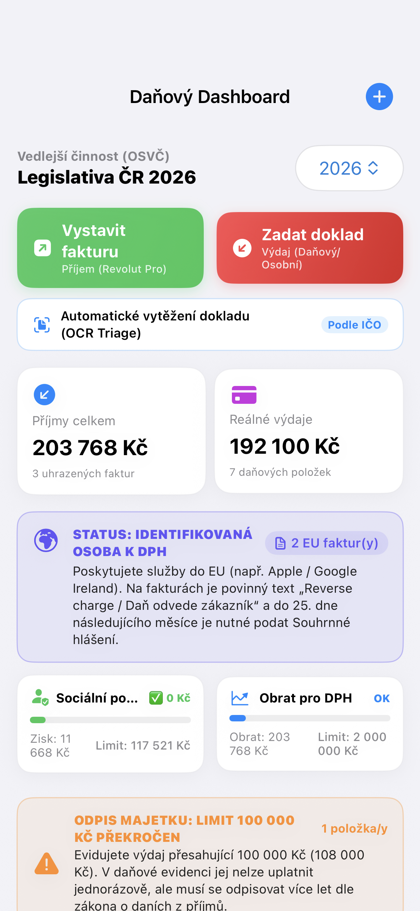
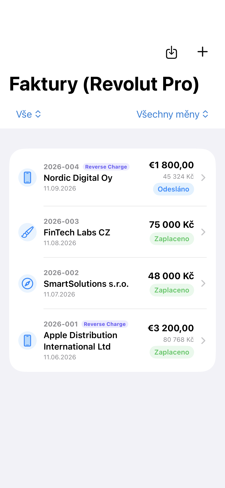
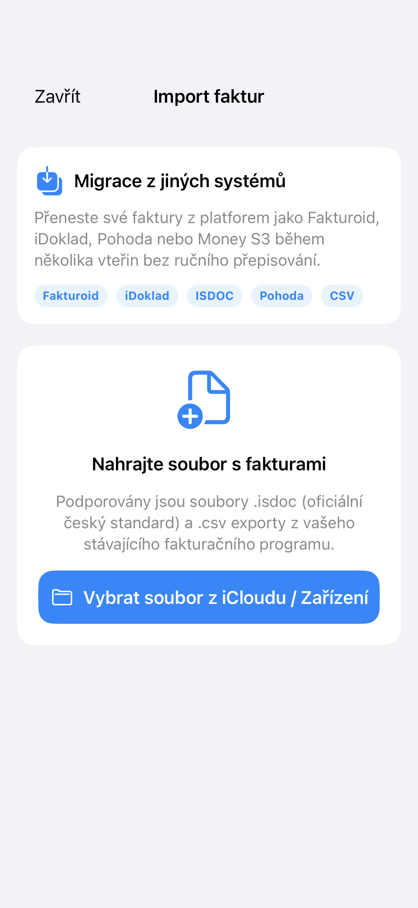
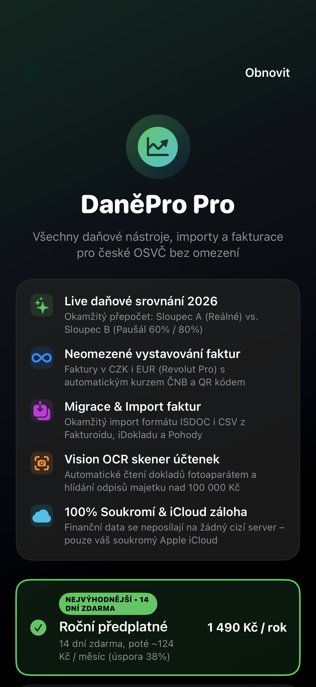

Chytrá daňová evidence a fakturace pro české freelancery. Live srovnání reálných výdajů s paušálem, Revolut Pro a 100% soukromí bez externích serverů.
Upozornění: Aplikace je nezávislý softwarový nástroj pro evidenci a modelové srovnání daňových režimů OSVČ (zákon č. 586/1992 Sb.). Nenahrazuje individuální poradenství certifikovaného daňového poradce. Obchodní podmínky
Okamžitý přehled v reálném čase. Porovnává daňovou evidenci (reálné výdaje) s výdajovým paušálem (60 % / 80 %). Zelený štítek vám ihned spočítá, která metoda vám ušetří více peněz.
SOUČÁST VERZE 1.0Hlídá zákonnou rozhodnou částku 117 521 Kč zisku pro rok 2026. Při zisku do tohoto limitu je sociální pojištění 0 Kč (osvobozeno od plateb záloh). Včas vás upozorní při přiblížení k limitu.
SOUČÁST VERZE 1.0Vystavujte faktury tuzemským i zahraničním klientům. Automaticky stahuje oficiální denní kurzy ČNB, doplňuje QR platbu pro české banky a generuje čisté A4 PDF faktury.
SOUČÁST VERZE 1.0Při fakturaci klientům v EU (Apple, Google atd.) automaticky vkládá povinnou doložku dle čl. 196 Směrnice 2006/112/ES a hlídá povinnosti Identifikované osoby k DPH.
SOUČÁST VERZE 1.0Zadejte IČO a jedním klepnutím načtěte oficiální název, sídlo a DIČ z registru MFČR. Automaticky rozpozná CZ-NACE obor podnikání a odpovídající paušál (60% volná vs. 80% řemeslná).
SOUČÁST VERZE 1.0Přecházíte z jiného systému? Snadný import faktur ze standardu ISDOC (Fakturoid, iDoklad, Pohoda, Money S3) i CSV souborů s automatickou kontrolou duplicit.
SOUČÁST VERZE 1.0Vyfoťte doklad fotoaparátem. Systém Vision OCR doklad vytěží a podle vašeho IČO rozpozná, zda jde o příjem nebo výdaj. Hlídá také hranici odpisů majetku nad 100 000 Kč.
SOUČÁST VERZE 1.0Vaše finanční data nikam neposíláme. Aplikace nemá žádný externí server ani reklamní trackery. Veškeré záznamy jsou bezpečně uloženy v zařízení a synchronizovány v soukromém iCloudu.
SOUČÁST VERZE 1.0Reálné snímky z aplikace v dark módu pro iOS 18 (iPhone 16 Pro)

Live daňové srovnání 2026

Faktury (CZK & EUR)

Import z Fakturoidu & iDokladu

Předplatné Pro (14 dní zdarma)
Základní verze umožňuje zdarma vystavit až 5 faktur ročně pro vyzkoušení kalkulátoru. Pro neomezenou evidenci, importy a OCR vytěžování je k dispozici roční předplatné se 14denní zkušební dobou zdarma (1 490 Kč / rok, odpovídá ~124 Kč/měsíc), flexibilní měsíční předplatné (199 Kč / měsíc) nebo jednorázová doživotní licence (2 990 Kč).
Předplatné lze kdykoliv spravovat nebo zrušit v nastavení vašeho Apple ID.
Aplikace DaněPro vám ušetří hodiny počítání i peníze na daních a odvodech.